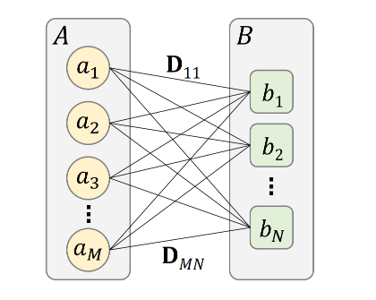
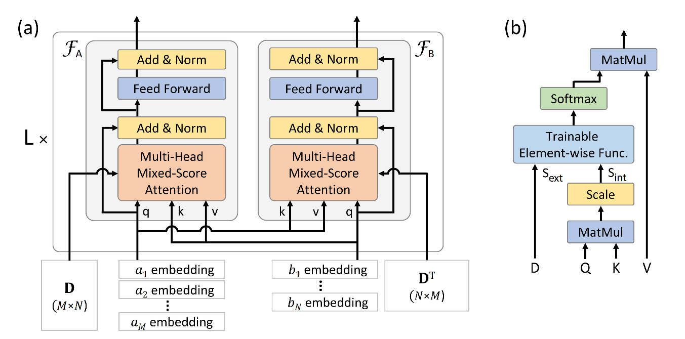
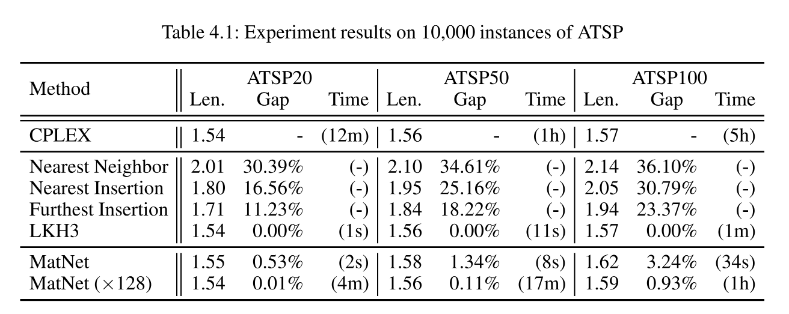
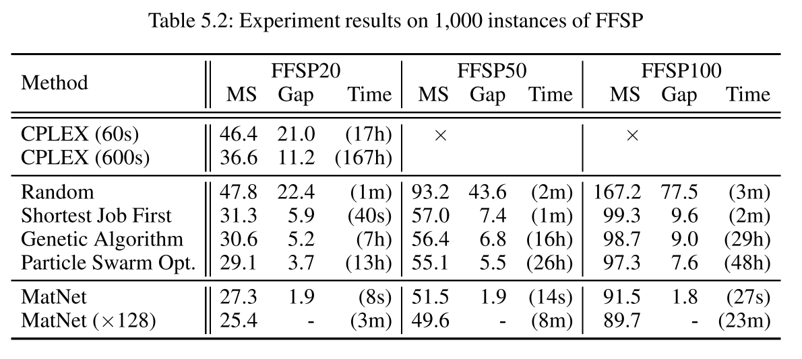

Paper Reading #5: MatNet
Last updated on September 28, 2025 pm
本文将精读论文 “Matrix Encoding Networks for Neural Combinatorial Optimization”，作者 Kwon et al.，时间 2021 年，链接 arXiv:2106.11113。
论文概述
这篇论文发表在 NeurIPS 2021 上，提出了 Matrix Encoding Network（MatNet），目的是填补现有模型难以直接处理以“关系矩阵”形式定义的组合优化问题这一空白。文章在 ATSP 及 FFSP 两类问题上进行了实验。
Abstract
Machine Learning (ML) can help solve combinatorial optimization (CO) problems better. A popular approach is to use a neural net to compute on the parameters of a given CO problem and extract useful information that guides the search for good solutions. Many CO problems of practical importance can be specified in a matrix form of parameters quantifying the relationship between two groups of items. There is currently no neural net model, however, that takes in such matrix-style relationship data as an input. Consequently, these types of CO problems have been out of reach for ML engineers. In this paper, we introduce Matrix Encoding Network (MatNet) and show how conveniently it takes in and processes parameters of such complex CO problems. Using an end-to-end model based on MatNet, we solve asymmetric traveling salesman (ATSP) and flexible flow shop (FFSP) problems as the earliest neural approach. In particular, for a class of FFSP we have tested MatNet on, we demonstrate a far superior empirical performance to any methods (neural or not) known to date.
作者指出，很多 CO 问题都用两组实体之间的关系矩阵的形式表示，但现有的 ML 模型不能直接用矩阵作为输入。为此，作者提出了 MatNet。
Introduction
作者以 TSP 问题为例，指出了现有模型的缺陷。一旦 TSP 中欧几里得距离的约束被替换，即替换成和现实情况更接近的距离矩阵，那么现有的模型已经无法处理。类似的还有流水车间调度、指派问题等。
作者对这些 CO 问题进行了符号定义。CO 问题中会有两类不同的实体，分别是 以及 。接着，有一个数据矩阵 ，其中第 个元素表征了 之间的关系（如距离、时间、成本等）。
需要注意的是，这里的关系矩阵和词向量序列或 2D 图像有显著的区别。由于集合 和 中的元素是无序的， 的行和列的顺序也是任意的。因此，我们的模型应该具有置换不变性（permutation invariance）。
MatNet 的作用就是要对这样的数据矩阵 进行编码，来学到一个良好的表示。
模型架构
二分图建模
MatNet 可以看作是带权重的完全二分图上的 GNN。有两组顶点 和 ，每对 和 之间的边有权重 。

在 AM 中，Encoder 采用图注意力机制（GAT），包含了 个图注意力层，每层中结点 的表示由 汇聚所有邻居的信息后更新到 ，更新方式是
其中 是 所有邻居结点的集合。
MatNet 仍采用 GAT 框架，对 AM 做的主要修改是：
- 对 和 中的节点采用两种不同的更新函数；
- 计算两个节点 和 之间的注意力分数时，考虑边的权重 。
其每一层的更新公式为
双图注意力层（Dual graph attentional layer）
考虑到 集合和 集合中的元素通常代表不同类型的实体（如 FFSP 中的机器和任务），MatNet 为两个集合设计了两套独立的更新函数 和 ，即 集合和 集合节点的表示更新使用不同的参数。这使得模型可以为不同类型的实体学习定制化的表示策略。

如图 (a) 中所示，MatNet 的 Encoder 网络仍然采用 个图注意力层堆叠的形式，每层包含实现了 和 的两个子块。两个子块的结构是完全一样的，都和 AM 的 Encoder 架构类似。
与 AM 不同的是，AM 中采用的是自注意力机制，而 MatNet 中采用了交叉注意力机制。这是很自然的，因为 中的节点与 中所有节点相邻，那么要更新 中的节点，就应该用 中节点的向量做 query， 中节点的向量做 key 和 value 进行更新。
混合分数注意力 (Mixed-Score Attention)
MatNet 还将 AM 中的传统注意力机制改进成了混合分数注意力，这使得我们可以利用边的权重信息，即关系矩阵 。
在 MatNet 中，传统注意力机制给出的注意力分数为 ，称为内部注意力分数。同时，关系矩阵 作为外部注意力分数 。接着，一个小型可学习的 MLP 将 和 作为输入，并决定如何混合这两种分数，生成最终的注意力权重。
注意，每个注意力头拥有一个自己的 MLP，这使得不同的头可以专注于捕捉不同层面、不同类型的特征。同时，这里的 MLP 是逐元素的，这使得整个注意力机制对输入的顺序不敏感，即具有置换不变性。
节点表示初始化
考虑到置换不变性，MatNet 采用零向量初始化 中的节点嵌入，用独热向量初始化 中的节点嵌入，这使得 MatNet 能够支持不同规模的输入，模型的泛化能力也会更好。同时，独热向量的初始化可以用于实例增强（instance augmentation）。
实验及其结果
ATSP 问题
ATSP（Asymmetric Traveling Salesman Problem）将 TSP 问题中的欧几里得距离替换为距离矩阵，这里的距离矩阵可以是不对称的。对于每个出发地 和目的地 ，边的权重为距离 。Decoder 采用和 AM 相同的结构。

FFSP 问题
作者还在 FFSP（Flexible Flow Shop Problem）问题上进行了实验，达到 SOTA。
